The Glass Bees performing at Envoy Enterprises, NYC, June 26, 2009. (Photo: Lucius Kwok.)
History & Practice
Based in New York City, the Glass Bees were Jason Das (2006-2012), Chris Williams (2006-2012), and Andrea Williams (2008-2009; no relation to Chris). The name is borrowed from Ernst Jünger’s 1957 novel Gläserne Bienen.
Left to Right: Jason, Olivia, Chris, and Andrea at Westbeth Studios in May, 2009. (Photo: Scott Bransford.)
Glass Bees Timeline
2005-2006
Preface/Introduction
After their rock band The Sick Passengers dissolved, Chris Williams and Jason Das spent a year or so trying to start a new one, auditioning drummers and aborting new songs. Eventually, they were sufficiently distracted by their unplanned improvisations to prioritize those instead. Once a week for the next six years, Chris and Jason met up at rehearsal studios in Manhattan to create sounds, recording the room directly into a stereo microphone.
December 17, 2006
Website and Podcast launch
Between 2006 and 2012, more than 80 audio recordings of live improvisations were posted to this website and published as a podcast. Though these granular posts have since been removed, some of these tracks were later remastered and resequenced for “Tops Crops Snaps Hots” (2008) and “Because Tomororrow Disaster May Come” (2023, compiling material from 2008-2012). Most tracks featured original cover artwork by Jason; a selection of these images appears below.
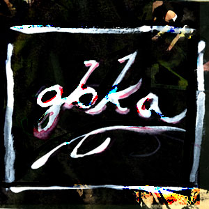
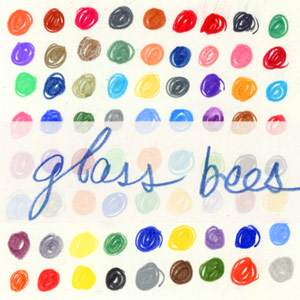
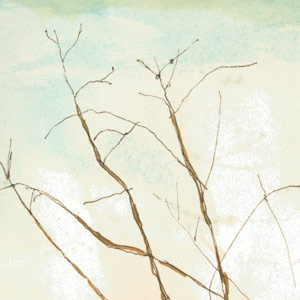
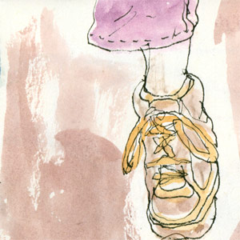
November 24, 2007
“The Lake House” at Cake Shop, Lower East Side, NYC
In their first public performance as the Glass Bees, on Thanksgiving Friday, Jason and Chris appear (very) briefly behind a screen as part of a seamless-relay alternate soundtrack to the 2006 Sandra Bullock/Keanu Reeves film “The Lake House.” Also performing: Duf Davis, Shepard, Rule Youth Union, Toby Goodshank, D&D Music Factory, The Kimbrell Brothers, Stolen Brown Evergreen, Polly Wanna, and No, We Are Thor. It's reasonable to suspect that many of these acts did not exist for longer than a day or two.
February 27, 2008
Andrea Williams meets the Glass Bees
When a newly-met friend-of-a-friend also makes weird sound art, you invite them to join you in the studio to see how it goes. Andrea was an occasional guest for a few months before joining the Glass Bees as a full third member in June, 2008.
June 7, 2008
Performance in Chris’s basement in New Jersey
The first proper performance in front of an audience. Jason and Chris are joined by special guest Eve LoCastro (flute) for a performance celebrating Chris’s birthday. Listen:
Good friends Lungs of a Giant, Miami Ice Machine, and Pirate Satellite (Jason and Eve’s other band at the time) also performed.
August 8, 2008
“Tops Crops Snaps Hots” released
“Tops Crops Snaps Hots” is self-released as a limited edition CD, compiling eleven highlights from the group's earliest recordings sequenced into a continuous 63'25" mix with invaluable production assistance from the late Jim Bentley at his studio, The Fort.
TCSH was later remastered and released as a download in 2023.
October 10, 2008
Monkeytown, Williamsburg, Brooklyn NY
Jason, Andrea, and Chris accompany live video by Guillaume Clave as part of Forward Motion Theater’s EyeWash series. An unusual venue, Monkeytown served a full dinner to audience members seated under giant video screens along all four walls of a cube-like room. Also performing: MOSTRA + Nico Mazet, VBLANK + AUTO DA FE, and VJ Pixalot. (Photo: Laura.)
February 16, 2009
OptoSonic Tea series at Diapason Gallery, Sunset Park, Brooklyn NY
Jason, Andrea, and Chris accompany Peter Shapiro‘s live video mix “The End of Television.” Also appearing: Ezekiel Honig and Joshue Ott.
March 4th, 2009
Barbès, Park Slope, Brooklyn NY
Jason, Andrea, and Chris accompany Ranjit Bhatnagar in the culminating performance of his “28 Noisy Noises,” for which Ranjit made a new musical instrument each day of February. The concert was featured on NPR's All Things Considered. (Video: Peter Shapiro.)
June 26, 2009
Envoy Enterprises, Lower East Side, NYC.
Jason, Andrea, and Chris perform in an art gallery, including some live audio drawing with a Drawdio. Blevin Blectum played a set on her own and then shared an encore with the Bees. (Photo: Lucius Kwok.)
July 14, 2009
Monkeytown, Williamsburg, Brooklyn
Jason, Andrea, and Chris perform, accompanying videos prepared by Chris. This is Andrea’s final appearance as a Glass Bee (before she skips town to get an MFA in Electronic Music from Mills College and a PhD in Electronic Arts from Rensselaer Polytechnic Institute studying under Pauline Oliveros). Also appearing: Lou Rossi, Carlos’ Red Shoes, and Frogwell. (Photo: Joshua Howard.)
August 1, 2009
Art Social, Wallabout, Brooklyn, NY
As part of a salon curated by Aneikit Bonnel, Jason and Chris perform in the back yard. Featured visual artists are Rebecca Beers Miller, Hanly Gunn, and Claire Falkenberg.
September 20, 2009
“Venice, Brooklyn” as part of Conflux City
at Envoy Enterprises, Lower East Side, NYC
Jason and Chris wake up early to [[ TK TK. TK Special page just for this. ]]
(Photo: Ranjit Bhatnagar.)
March 3, 2010
Barbès, Park Slope, Brooklyn NY
Jason and Chris accompany Ranjit Bhatnagar in the culminating performance of his “28 More Noisy Noises,” for which Ranjit once again made a new musical instrument each day of February. (Photos: dAve Hollinghurst.)
March, 2010
”Ça Fa Palome” Video
An animated film by Greg Harrison is set to the Glass Bees' 2007 recording “Ça Fa Palome.”
May 7, 2010
Devotion Gallery, East Williamsburg, Brooklyn, NY
Jason and Chris accompany Ranjit Bhatnagar on his trash-built instruments at the opening the ScrapCycle(reUSE/reCOMBINE) exhibit. Also performing: Bora Yoon and Tom Vanderwall.
June 12-13, 2010
Governors Island, NYC
“Reading Governors Island” As part of FIGMENT NYC
Jason and Chris TK multiday particpatory TK ... TK link to full page all about it.
August, 2010
”Saint Jude”
A documentary about arist Mary Lynch by filmmaker Nerina Penzhorn features the Glass Bees’ 2008 recording “The Weavers of Schalkenmehren.”
September 25, 2011
One Thousand Pulses, Woodcliff Lake, NJ
Jason and Chris perform improvised soundtracks in music journalist, label head, and musician Darren Bergstein’s “Tone Cone” in Bergen County. Also appearing: Color Is Luxury (Charles Cohen and Hair_Loss).
May 12, 2011
19ths Loft, Bushwick, Brooklyn
Jason and Chris perform on a bill alongside Hey Exit, Hora Flora, and Andrea Williams (solo). The performance, an improvisation retrospectively released as "The Privatization of Desire," includes audio of Rebecca Solnit in conversation with Peter Coyote. Listen:
March 10, 2012
The Old Stone House, Park Slope, Brooklyn NY
Jason and Chris perform as the Glass Bees for the last time in front of a live audience inside a replica of a 17th century farmhouse. The evening features various combinations of the Glass Bees, Ranjit Bhatnagar, Dan Joseph, and Andrea Williams.
September 7-9, 2012
“Unique Places of Death” at Momenta Art/Bogart Salon, Bushwick, Brooklyn NY
Jason and Chris [[ TK Exploration and Installation TK ]]
A Collaboration with the Hart Island Project as part of Citydrift. [[ TK ]] link to full project
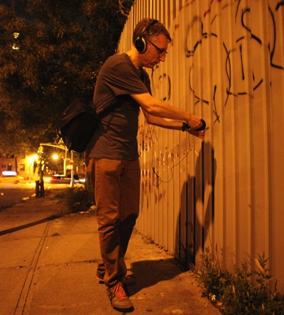
March 10, 2023
“Because Tomorrow Disaster May Come” released.
Compiling six tracks recorded between 2008 and 2011, with a total runtime of 47'22", “Because Tomorrow Disaster May Come” is released as a download and limited-edition deluxe CD by Chris’s art publishing project, Smooth Space Editions.


 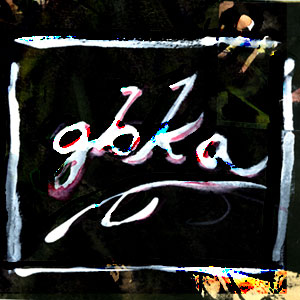
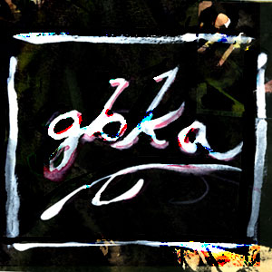

 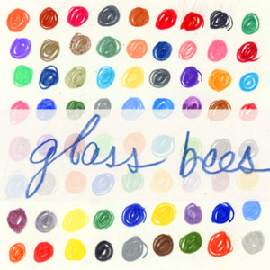
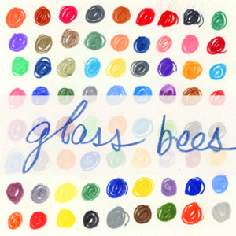


 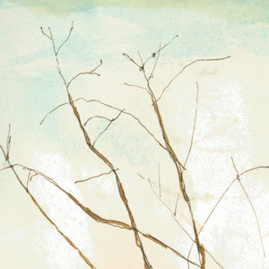
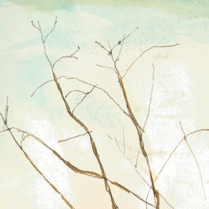


 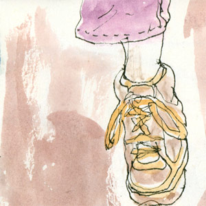
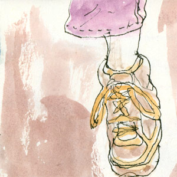